Merida Experience Center, Apeldoorn
Eerst rijden.
Dan kiezen.
Kom, voordat je een fiets koopt, eerst proberen. Hier staat de hele Merida-collectie in één hal: race, gravel, mountainbike, e-bike en meer. Je laat je opmeten, maakt een proefrit en kiest pas als het klopt.
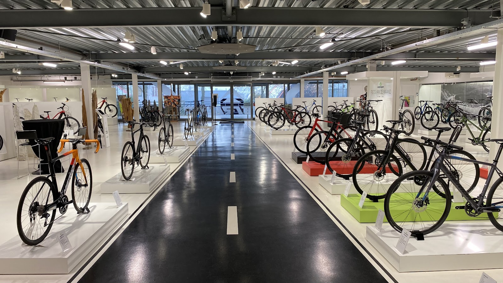
Apeldoorn
09:00 tot 17:00
62 reviews
Zo gaat een bezoek
Neem gerust de tijd. Bezoekers rijden twee maten van hetzelfde model en komen er zelfs voor uit België. Bel even vooraf, dan staat je fiets klaar.
-
1
Afspraak maken
Bel 055 506 1001 of mail info@merida.nl en zeg welke fietsen je wilt proberen.
-
2
Uitmeting
We meten je op, zodat je de juiste maat en het juiste model test.
-
3
Proefrit
Rijd de Reacto naast de Scultura, of de Silex in twee maten. Voel het verschil zelf.
-
4
Bestellen
Bestel je fiets en laat hem uitleveren door een Merida-dealer bij jou in de buurt.
De hele collectie op de vloer
Van de recreatieve rijder tot de fanatieke wedstrijdrenner: in Apeldoorn zie je alle series naast elkaar, in aluminium en carbon.
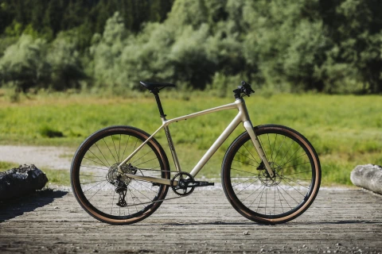
-
Racefietsen
€ 1.399 tot € 11.499Reacto voor snelheid, Scultura om als eerste boven te zijn, Scultura Endurance voor comfort. En de Time Warp TRI.
-
Gravelbikes
€ 1.599 tot € 8.999Silex en Mission, voor grind, bospad en lange dagen.
-
Mountainbikes
€ 749 tot € 8.999De Big Nine hardtail, de full-suspension Ninety-Six en de Big Seven. Voor beginners tot wedstrijdrijders.
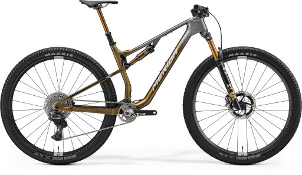
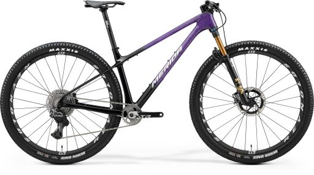
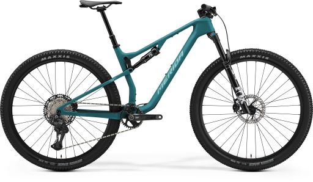
-
Hybrides
€ 749 tot € 1.049De Crossway: bredere banden en een verende voorvork, op te bouwen voor woon-werkverkeer of fietsvakantie.
-
En verder
E-bikes, kinderfietsen, fitnessfietsen en framekits. Plus kleding, onderdelen en toebehoren.
Voor de liefhebber een paradijs
Meer dan een showroom. Na je proefrit zit je bij de haard of aan de bar, en tussendoor kijk je rond in de werkplaats en de kledingafdeling.
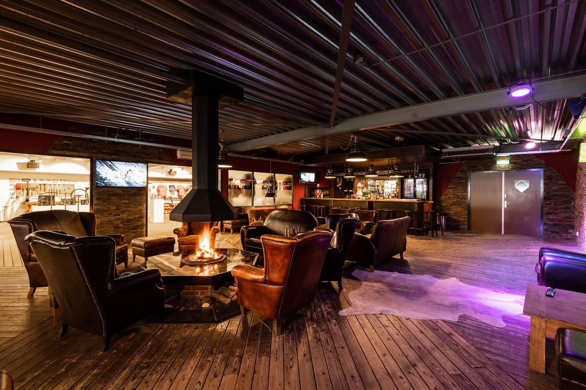
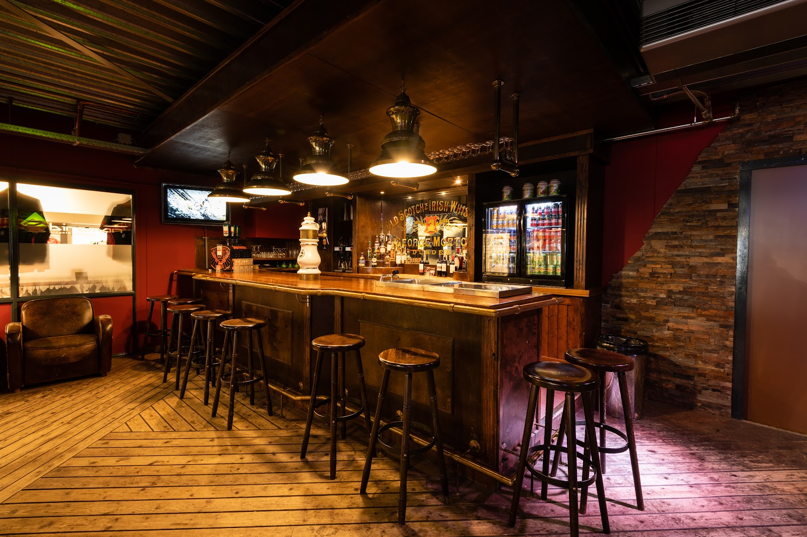
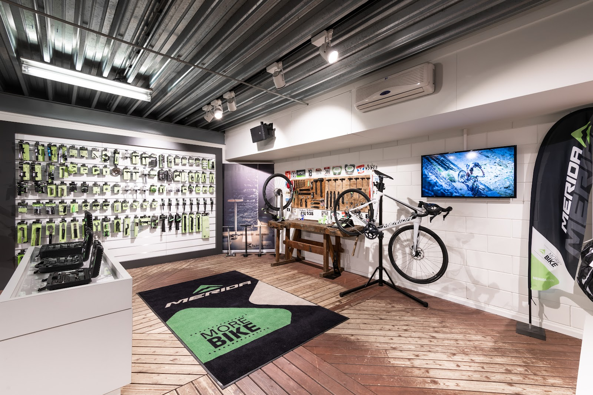
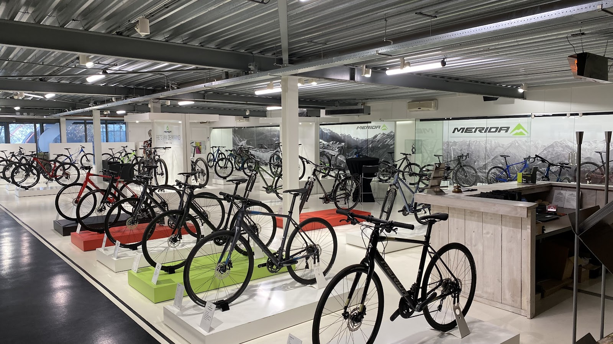
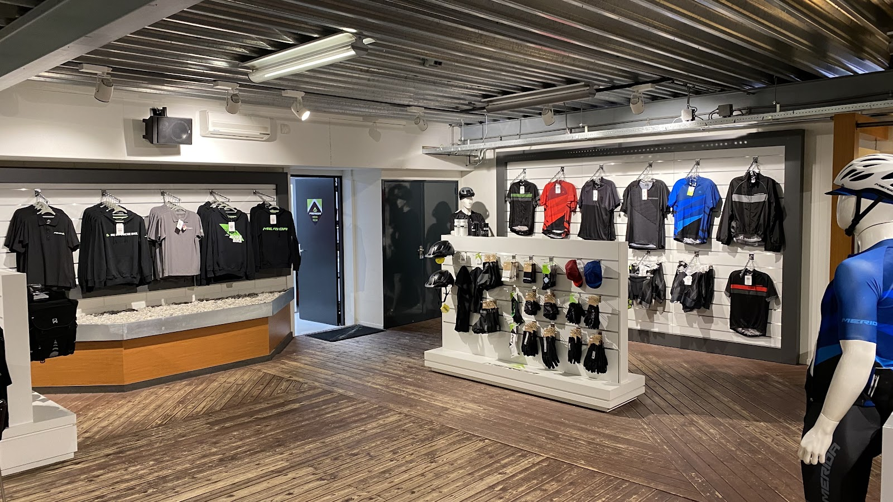
Wat rijders zeggen
4,4 van 5 op Google, 62 reviews
"Bij binnenkomst was ik direct onder de indruk van de prachtige winkel; voor de liefhebber van wielrennen is dit een waar paradijs. Ik ben uitstekend geholpen"
"Heb vandaag, 11 september een proefrit gemaakt op de Silex 8000. De ervaring op de fiets was super maar wat veel belangrijker is is de benadering van het team daar aanwezig. Meedenkend, vriendelijk, adequaat, goed geïnformeerd en vakkundig en geen vraag was te veel."
"Vandaag samen met mijn zoon vanuit België naar het experience center gereden in Apeldoorn waar hij de Merida reacto en de Merida scultura kon testen op basis van een uitmeting. Zėér goede en uitgebreide uitleg gekregen met vriendelijke ontvangst. Wat een service! Zeker de moeite waard!!"
"Even gekeken naar de nieuwe 2026 modellen was weer een feestje, er staat weer een mooie collectie."
"Zowel in Apeldoorn als in Klarenbeek erg goed ontvangen. Bekwame mensen die je alle informatie geven voor de juiste fiets keuze."
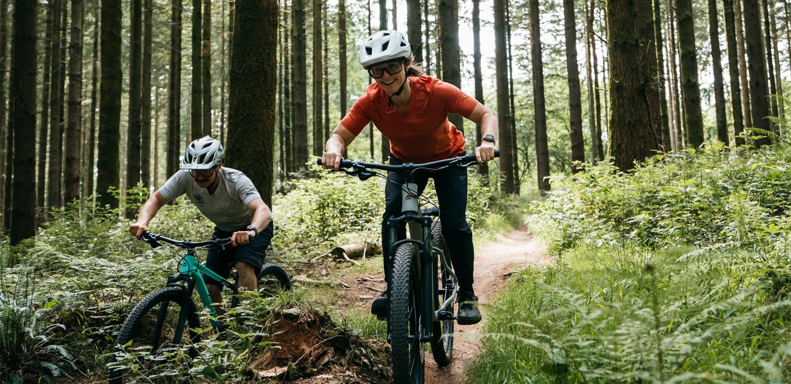
Merida Factory Tracks
Het Experience Center ligt aan de rand van de Veluwezoom. Koffie op de hei, een terras langs de dijk of gewoon de bossen in: vanaf hier rijd je zo de mooiste tochten.
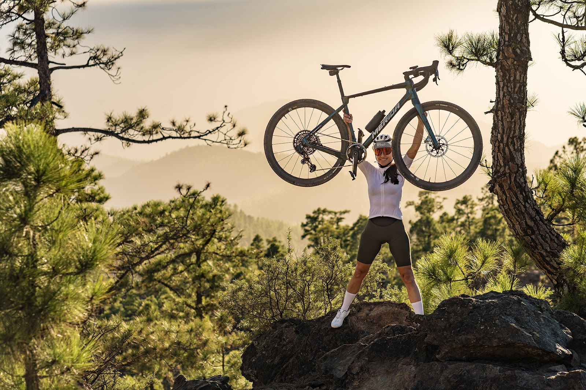
Me-ri-da
Sinds 1972
Ike Tseng richtte Merida in 1972 op. De drie lettergrepen betekenen vrij vertaald: alleen mooie, hoogwaardige producten maken waarmee iedereen zo prettig mogelijk zijn bestemming bereikt. Inmiddels levert Merida jaarlijks 1,5 miljoen fietsen. In Apeldoorn kun je ze allemaal proberen.
Kom langs in Apeldoorn
Openingstijden
- ma t/m vr
- 09:00 tot 17:00
- zaterdag
- gesloten
- zondag
- gesloten
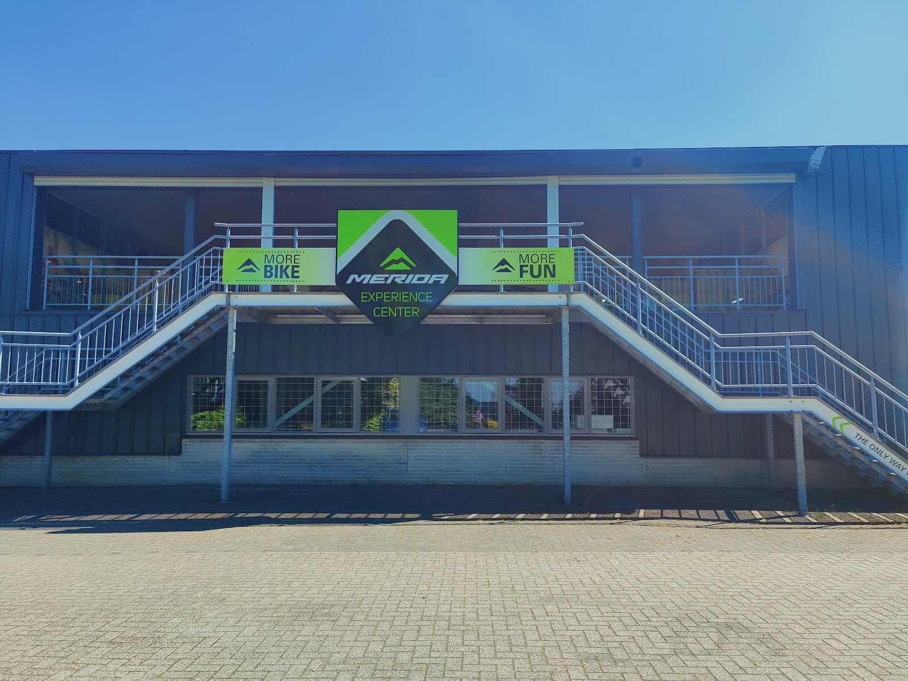